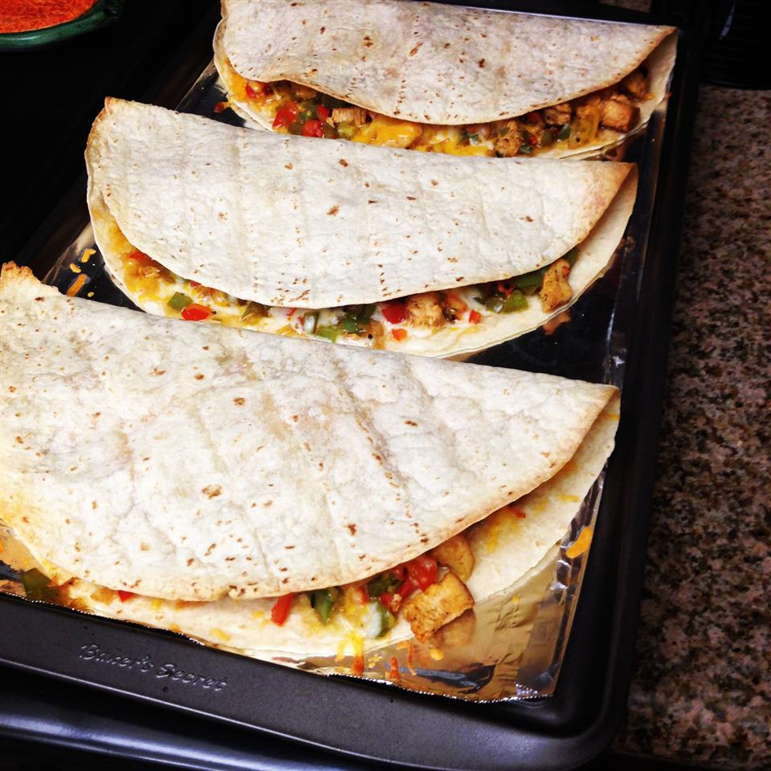

Chicken Quesadillas

This chicken quesadilla recipe is great to make for parties. Zesty chicken, cooked peppers, and melted cheese are a
delightful combination. Cut into wedges and serve with sour cream and salsa.
Ingredients
- 1 pound skinless, boneless chicken breast, diced
- 1 (1.27 ounce) packet fajita seasoning
- 1 tablespoon vegetable oil
- 2 green bell peppers, chopped
- 2 red bell peppers, chopped
- 1 onion, chopped
- 10 (10 inch) flour tortillas
- 1 (8 ounce) package shredded Cheddar cheese
- 1 (8 ounce) package shredded Monterey Jack cheese
- 1 tablespoon bacon bits
Directions
- Step 1
- Preheat the broiler. Grease a baking sheet.
- Step 2
-
Toss chicken with fajita seasoning, then spread onto the baking sheet. Place under the broiler and cook until chicken is
no longer pink in the center, about 5 minutes.
- Step 3
- Preheat the oven to 350 degrees F (175 degrees C).
- Step 4
-
Heat oil in a large saucepan over medium heat. Stir in bell peppers, onion, and broiled chicken. Cook and stir until
vegetables have softened, about 10 minutes.
- Step 5
-
Layer half of each tortilla with chicken and vegetable mixture, Cheddar cheese, Monterey Jack cheese, and bacon bits.
Fold tortillas in half and place onto a baking sheet.
- Step 6
- Bake quesadillas in the preheated oven until cheeses have melted, about 10 minutes.
- Step7
- Cut each quesadilla into 4 wedges and serve.
Nutrition Facts
Per Serving: 244 calories; protein 13.7g; carbohydrates 21.8g; fat 11.3g; cholesterol 34.9mg; sodium 504.3mg